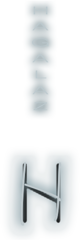
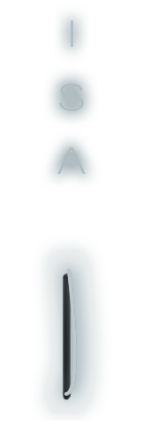

FEHU
material or spiritual gain
Rune of wealth and prosperity
Fehu represents the personal fulfillment that materializes with a reward, a fulfilled love or a satisfied and
achieved ambition.
THURISAZ
To recover from wounds To let go of old ideas. Get an inspiration.
Openness to new knowledge.
Rune of the new beginning
Thurisaz helps improve the ability to wait and patience. Before taking a step forward, it is necessary to
analyze the past, identify both the achievements and the mistakes and collect the positive experiences. With all
this, you will be able to make the right decision.
ANZUS
Communication - Creativity - Understanding - Negotiations - Conciliation
Rune of communication and creativity
The meaning of Ansuz is usually linked with signs, messages, communications or gifts. Ansuz is the arrival of
wisdom, of a new stage of life that is going to open. The mouth, the power of the word. The spiritual power
working through the word. The power of suggestion.
RAIHDO
Displacements, trips and changes of physical and real situation.
Rune of change and transformation
Start of a trip or the arrival of sudden changes. In addition, all this will be accompanied by a lot of
enthusiasm and surprises since the trip will not be alone, you will have someone who will accompany you. It can
be a physical journey or an internal change.
KENAZ
Triumph, advance, dynamism and enthusiasm
Rune of advancement on a path free of obstacles
Kenaz represents an improvement in the clarity with which you see things. On the other hand, it symbolizes the
start of new activities or jobs. Finally, the meaning in love is closely linked to a mutual openness and a new
state of understanding in the couple.
GEBO
Alliances, associations, contracts, weddings and celebrations
Rune of contracts, alliances and associations.
Pact or association of importance to your life quickly. For example, it could be the union of people with two
different paths but who, by the whims of fate, will come together to form a team or couple with a special
symbiosis.
URUZ
Money, valuable objects, generosity, positivity
Rune of daring, freedom, agility, endurance
t is considered a transition rune where the closure of a cycle and the beginning of something totally different
are collected. The fact of starting a new stage forces to close the previous one, whatever the process you need
to go through to get to the next one.
WUNJO
Glory, fullness, fulfillment, reward
Rune associated with collecting achievements.
The meaning of the Wunjo rune is linked to material and spiritual gains. That is, salary increases or, failing
that, an inner realization. It is a very broad rune since it can simply mean an improvement in your own
well-being thanks to some new situation. Therefore, you will begin to see things more clearly and you will be
able to achieve your goals or ambitions more easily.

HAGALAZ
End of a cycle of adversity, beginning of a new one
Rune associated with renewal after tragedy
Change is essential for you to evolve.
Do not resist in this moment of crisis and recognize it as an opportunity to move forward. If you succeed you
will become a new being. Accept the changes and value your current resources.
NAUTHIZ
Knowledge, evolution, forging one's own destiny
Rune of fate, the knowledge of the future.
It will help you to take advantage of the negative aspect of things and turn it into your own alliances. That
is, work with the shadow, manage to turn negative situations around and learn not to take things personally.
Finally, you will be able to take on any problem that comes along and fix it quickly and successfully.

ISA
self-confidence, perseverance
Rune of initiative and the impulsiveness.
All life is obedient to the ruling will. Therefore, gain power over yourself and you will have power over
anything that goes against you in the spiritual and physical worlds.
Firmness in the face of unstable
environments and people.
JERA
Success, abundance, harvest.
Rune symbol of success and abundance.
On the one hand, the Jera rune indicates positive results after a long time of waiting. In addition, patience to
make decisions correctly and knowing how to get along all the time that the process has lasted. On the other
hand, income or collections, employment deals or new sentimental and intellectual connections.
EIHAWAZ
Help and protection, disentanglements.
Rune of defense and protection against personal problems.
Grants intelligence and wisdom, foresight and perseverance. Do not act without thinking because, analyzing the
situation more carefully, we could realize that what is obvious is not always the right thing to do and that the
solution lies in doing what we thought did not make sense
PERTHRO
Luck, opportunities, achievements, surprises.
Rune that represents inner renewal, the result of your evolution.
Perthro is normally tied to the arrival of unexpected profits. It also alludes to achieving achievements that
could happen but, for some reason, hope for them had already been lost. However, not everything comes by itself
and it may be you who should investigate, ask and keep track of what is happening to find out the final result.
ALGIZ
Preservation, healing, protection.
Rune of protection.
Control of material goods and emotions. In addition, it indicates the arrival of safe and well-founded
opportunities without negative people or external factors affecting the situation. Without a doubt, Algiz works
in us as a "spiritual warrior" and protects us from being victims of false or disingenuous conduct. However, if
you are already in a complicated situation, you must assume it and face it, since the greatest lack of
protection is to do nothing and let the situation resolve itself.
SOWILO
Unbreakable will, realization of projects, success.
Rune of victory, invincibility.
Gain momentum and start a project as soon as possible. Enlightenment in a spiritual journey closely linked to a
restructuring of ideas thanks to an illumination that you did not have before. That is, you will see everything
much more clearly and illuminated. Therefore, this rune symbolizes the fire that lights our way and the
decisions we make daily.
TIWAZ
Right path, guidance, victory, success
Rune of reasoning and decision.
Successes and achievements of medium or great importance. Generally, the rune represents happiness, passion and
positive orientation. In addition, many say that it is linked to fertility, so if you have been looking for the
baby, its arrival may be announced in a short time. It is time to act and express firmly to achieve what you set
out to do.
BERKANO
Maternity, health, commitment, birth, stability
Rune of health and stability.
The meaning of the Berkana rune is completely linked to fertility and birth. Generally, all this is included in
the context of the arrival of a new baby but, however, it can also refer to the birth of new ideas or projects
that can bring hope and happiness to your life.
EHWAZ
Transfer, move, changes, new horizons
Rune of inner and outer evolution, progress and growth.
The meaning of the Ehwaz rune is totally linked to the arrival of an important process of transition and change.
However, this process may be physical, psychological or may have both facets at the same time. In any case, this
transition will be positive and could improve or solve a stagnant situation in your life. In short, it
symbolizes progress and growth in life through totally necessary and imminent changes.
MANNAZ
Wise choice, decision making, success, creativity, power of conviction.
Rune of the right decisions
The meaning of the Mannaz rune is related to the way of facing success and achievements. Therefore, this rune
helps you maintain humility and modesty regardless of how great your triumph or achievement may be.
LAGUZ
Creativity, conception, revelation, illumination.
Rune of intuition.
The meaning of the Laguz rune is related to emotional needs and personal fulfillment. Therefore, this rune tells
us about inner peace and tranquility without taking into account every minute what society demands or the need
to adapt to our environment.
INGWAZ
Evolution, new paths, home, legacy in children.
Rune of well-being in love, home, family.
The meaning of the rune is related to the beginning of a new life or, at least, that of a new stage with
fundamental principles very different from what you knew until now. Therefore, this rune invites you to start
those projects that you had in mind and to break with the routine in order to avoid possible obstructions in
your new plans.
DAGAZ
Transformation, advancement, prosperity, freedom and maturity.
Rune of renewal and evolution.
The meaning of the Dagaz rune is related to the complete transformation of a part of your life, an attitude or a
way of seeing things. In addition, it advances the arrival of this transition in a very short time interval,
that is, becoming a practically radical change. In any case, it usually introduces a very positive period of
prosperity, leaving behind many problems and headaches. In short, this rune will shed light on your life and
will make you rediscover what really matters on a daily basis.
OTHALA
Inheritance, benefits, power, wisdom.
Rune of inherited benefits.
The meaning of the Othala rune is linked to material and cultural goods that are inherited from generation to
generation. In addition, it is used for the moment of retiring, either from the world of work or from a
particular project. However, it is also useful when it is necessary to carry out some change in your life. It
does not mean that you should completely abandon a project, you may only need to change the way you see it to
end up finding the key to its growth.